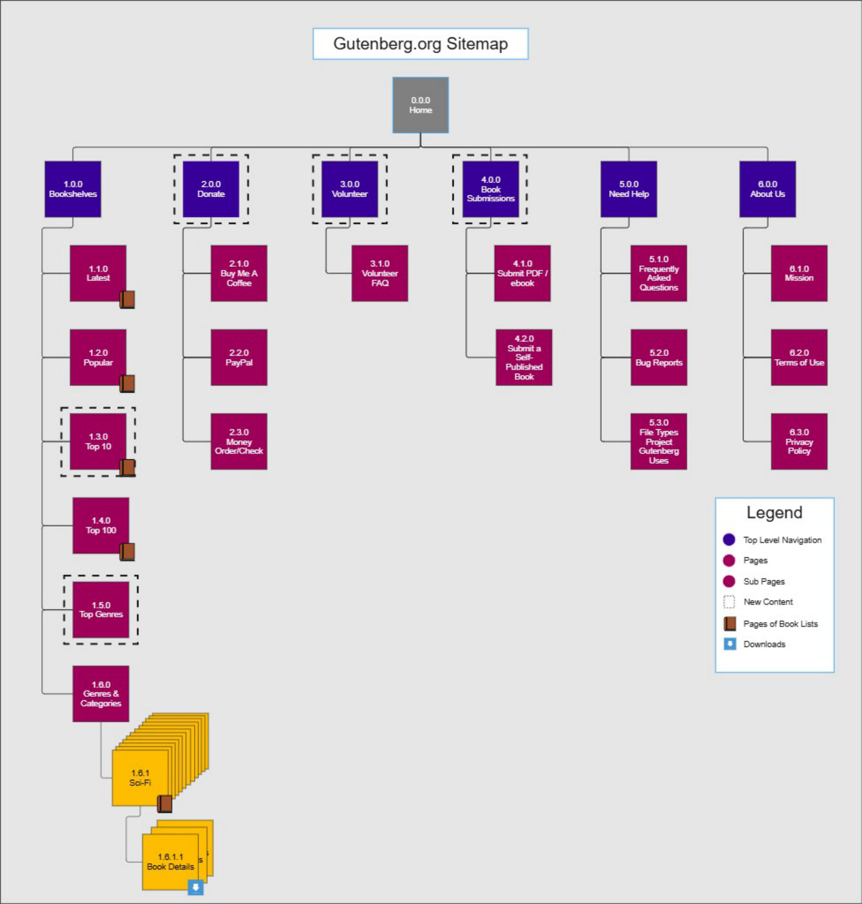

The Problem
Project Gutenberg hosts over 70,000 free eBooks and runs entirely on volunteers, but its information architecture hasn't meaningfully evolved with it. I approached this in two phases: first understanding how the content should be organized from the ground up, then evaluating how the current site actually performs against usability standards. Together they show a fuller research toolkit than either phase alone.
- Content inventory mapped the top two levels of the existing navigation and surfaced an immediate problem: despite being volunteer-run and donation-dependent, neither "Volunteer" nor "Donate" had a place in that top-level structure — both were buried inside a generic "Help" menu. "Frequently Downloaded" was flagged the same way: useful content with no top-level home. On the actual live pages, this showed up concretely — the book category page leaned on the term "Bookshelf" where "Genres" or "Categories" would match how people actually talk, and its "Main Categories" list was a bare alphabetical text wall with no visual structure. Volunteer information existed, but only as a few lines on the homepage with no prominence, or buried two clicks deep under Help → FAQ.
- Closed card sorting, run across three rounds via ProvenByUsers, converging steadily: a 2-participant pilot took the category set from 7 groups / 34 cards down to 7 groups / 26 cards; the first full round (5 participants) cut it further to 6 groups / 18 cards; the second round (9 participants) held stable at 6 groups / 18 cards, meaning the structure itself had converged and only wording was still moving. Specific findings along the way: "Help" was renamed "Need Help" after users weren't sure if it meant help topics or asking for help; "Ways to Donate" simplified to "Donate." "Want to Contribute" — designed as one combined hub for volunteering and book submission — turned out to be two different mental models, so it split into separate "Volunteer" and "Book Submission" categories. "Bookshelves" tested better than expected as a label (80% correct identification) but became an over-broad catchall, absorbing cards meant for other categories. By the second round, the remaining friction was almost entirely naming, not structure: "Content Format" became "File Types Project Gutenberg Uses" and then simplified again to "Help with File Types"; every donation method got a consistent "Donate Through [Method]" prefix after testing showed users didn't reliably recognize a service like Buy Me a Coffee by name alone.
- Task-based heuristic analysis graded the live site against two representative tasks — finding and downloading a cooking book (chosen because it's likely the single most common task on the site, with less genre ambiguity than most other books), and finding the Volunteer FAQ (flagged as high-risk by the content inventory, and confirmed as a core user goal in the personas/scenarios work). Each task was scored across 7 criteria — supporting users' mental models, surfacing options and feedback, leveraging design conventions, visual consistency, recognition over recall, error prevention, and recovery from mistakes — on a 5-point scale. The overall average landed at 2.5 out of 5. "Help users recover from mistakes" scored best at 3.3; "mental models" and "recognition rather than recall" scored worst at 2.0. Concretely, that meant: Authors, Subjects, and Bookshelves were presented as filters but didn't match how people actually think about filtering; results were sorted by popularity only, with no other sort options surfaced; and several icons were confusing without a label.
- Tree testing ran in three rounds and tracked the sitemap's real-world usability as it evolved. The pilot (7 participants, 4 tasks — including finding a specific book by title, finding cookbooks, submitting a public-domain book, and donating via PayPal) produced the first full draft sitemap, which the test itself was built on. Round 1 held the sitemap's structure steady (6 groups / 18 cards, unchanged) and surfaced only naming friction — "Book Submission" became "Upload a Book," "Bug Report" became "Report a Problem" — while the overly specific "find this exact title" task was swapped for a more broadly relevant volunteering task. Round 2, the final round, was the strongest result of the whole process: 3 of 4 tasks were completed correctly by 100% of participants, every task cleared an 80%+ success rate, and across all four tasks combined, participants took an indirect route only 6 times total. The single task with any wrong-path selection was the cookbook search, where one participant chose "Popular" instead of "Cooking" — a reasonable, defensible choice rather than a real navigation failure. The round produced no further changes to the sitemap; the structure had earned its confidence.
- Wireframes translated the validated structure into two task flows. For book search, a prominent homepage search bar and a dedicated genres/categories page (dropdown selector, alphabetical and numeric pagination, grid layout for results) replaced the old flat, popularity-only results list. For volunteering, "Volunteer" moved into the primary navigation as its own item, landing on a dedicated page that explains what volunteering involves, requires no experience, and ends in a clear "Volunteer Now!" call to action — replacing a path that used to require digging through Help → FAQ to find.

Final sitemap — six top-level categories replacing the original buried structure
Task 1 — Searching for a book by category

Authors / Subjects / Bookshelves presented as filters, but don't match a filter mental model

Results sorted by popularity only — no other sort or refine options surfaced

Search bar moved to a prominent homepage position

New top-level nav matching the validated sitemap

Dedicated genres/categories page with a dropdown selector

Grid results with real sort options and pagination
Task 2 — Finding volunteer information

Volunteer info buried under Help → FAQ, three taps deep

Once found, volunteer info is a brief paragraph with no clear next step

"Volunteer" promoted to its own top-level nav item

Dedicated page with a clear "Volunteer Now" call to action
- Heuristic evaluation (Nielsen's heuristics) scored four major violations against the live site: Visibility of System Status (8/10), Help & Documentation (8/10), Consistency & Standards (7/10), Aesthetic/Minimalist Design (6/10).
- Cognitive walkthrough mapped ideal paths for three tasks — searching and downloading a book, browsing by category, and donating — against where the real site diverged from them. The task list itself was revised mid-study: an originally planned "submit an eBook" task was swapped for the category-browsing task after early testing showed it was a far more common real-world path than book submission.
- Moderated usability testing with 6 participants (think-aloud protocol). All succeeded on Task 1 (find/download). Only one participant failed a task at all — Task 2 (browse by category) — where users split between two different paths, confirming the same ambiguity Phase 1's card sort had already flagged.
System Usability Scale results were uniformly positive: participants agreed strongly with statements like "I thought the website was easy to use" (~4.5/5) and "I would imagine that most people would learn to use this website very quickly" (~5/5), and disagreed just as strongly with negatively-framed statements like "I would need the support of a technical person to use this" and "I needed to learn a lot of things before I could get going" (both ~1/5). That's a genuinely interesting tension against the rest of the findings: heuristic evaluation scored real structural violations at severity 7–8, and one participant failed a task outright — yet subjective satisfaction stayed high across the board. People can feel confident and still hit a wall on a specific task; perceived usability and task success aren't the same measurement, and this data set is a clean example of where they diverge.
Why the two phases matter together
Using two different methodological approaches — one generative, one evaluative — and landing on the same conclusion is stronger evidence than either alone: volunteer and donation information is under-surfaced, and category browsing doesn't match users' mental models. That's what happens when a real usability problem gets tested from two directions and doesn't disappear. It also demonstrates range — generating structure from scratch, and evaluating an existing system against standards, are two different research muscles.
Constraints
Card sorting relied on a free-tier tool that capped participant slots and lost the pilot round's raw data entirely — findings were reconstructed from notes and screenshots. The usability testing sample (6 participants, one pilot) is enough for directional findings but too small to treat the SUS scores as statistically robust. Neither phase had access to someone with deep Project Gutenberg domain expertise, which was a real limitation when trying to understand why the genre/category taxonomy was as messy as it was.